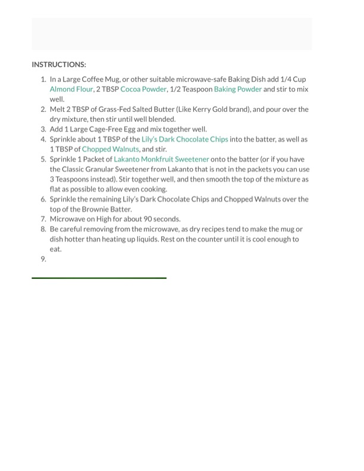

Keto Chocolate Brownie (Instructions)

Original cookbook page 106
Cook: About 90 seconds (microwave)
Ingredients
- 1/4 Cup Almond Flour
- 2 TBSP Cocoa Powder
- 1/2 Teaspoon Baking Powder
- 2 TBSP Grass-Fed Salted Butter (Like Kerry Gold brand)
- 1 Large Cage-Free Egg
- About 1 TBSP (plus remaining for topping) Lily's Dark Chocolate Chips
- 1 TBSP (plus remaining for topping) Chopped Walnuts
- 1 Packet Lakanto Monkfruit Sweetener (or 3 Teaspoons of Lakanto Classic Granular Sweetener)
Instructions
- In a Large Coffee Mug, or other suitable microwave-safe Baking Dish add 1/4 Cup Almond Flour, 2 TBSP Cocoa Powder, 1/2 Teaspoon Baking Powder and stir to mix well.
- Melt 2 TBSP of Grass-Fed Salted Butter (Like Kerry Gold brand), and pour over the dry mixture, then stir until well blended.
- Add 1 Large Cage-Free Egg and mix together well.
- Sprinkle about 1 TBSP of the Lily's Dark Chocolate Chips into the batter, as well as 1 TBSP of Chopped Walnuts, and stir.
- Sprinkle 1 Packet of Lakanto Monkfruit Sweetener onto the batter (or if you have the Classic Granular Sweetener from Lakanto that is not in the packets you can use 3 Teaspoons instead). Stir together well, and then smooth the top of the mixture as flat as possible to allow even cooking.
- Sprinkle the remaining Lily's Dark Chocolate Chips and Chopped Walnuts over the top of the Brownie Batter.
- Microwave on High for about 90 seconds.
- Be careful removing from the microwave, as dry recipes tend to make the mug or dish hotter than heating up liquids. Rest on the counter until it is cool enough to eat.
Recipe #106 from collection